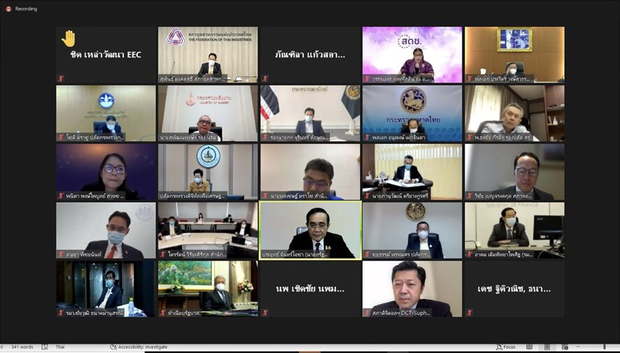

รายงานเผยแพร่ 5G

การประชุมคณะกรรมการขับเคลื่อน 5G แห่งชาติ ครั้งที่ 2/2564
ดีอีเอส ชูเทคโนโลยี 5G เข้ามาช่วยพัฒนาบริการด้านสาธารณสุข และพลิกฟื้นเศรษฐกิจในสถานการณ์โควิด 19 ในพื้นที่เชียงใหม่และภูเก็ต เมื่อวันที่ 22 กรกฎาคม 2564 พล.อ.ประยุทธ์ จันทร์โอชา นายกรัฐมนตรี เป็นปร...

นายกฯ นั่งหัวโต๊ะประชุมคณะกรรมการขับเคลื่อน 5G แห่งชาติ ครั้งที่ 2 เคาะแนวทางการส่งเสริม 5G ของประเทศ พร้อมขยายผลโครงการนำร่องฯ
นายกฯ นั่งหัวโต๊ะประชุมคณะกรรมการขับเคลื่อน 5G แห่งชาติ ครั้งที่ 2 เคาะแนวทางการส่งเสริม 5G ของประเทศ พร้อมขยายผลโครงการนำร่องฯ....

นายกฯ เปิดประชุมคณะกรรมการขับเคลื่อน 5G แห่งชาติ หนุนเศรษฐกิจและสังคมไทยยุคใหม่ มุ่งขับเคลื่อน 5G ทุกภาคส่วน
พลเอกประยุทธ์ จันทร์โอชา นายกรัฐมนตรี เป็นประธานการประชุมคณะกรรมการขับเคลื่อน 5G แห่งชาติ ครั้งที่ 1/2563 เมื่อวันศุกร์ที่ 14 สิงหาคม 2563 ณ ทำเนียบรัฐบาล การประชุมในครั้งนี้เป็นจุดเริ่มต้นสำคัญในการกำหนดเป้าหมายและแนวทางการขับเคลื่อน...